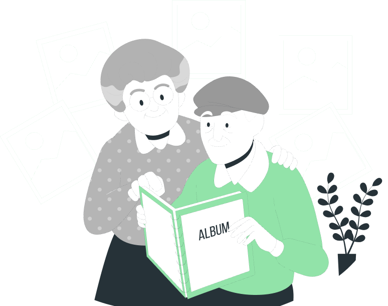

Recursos útiles
Encuentra guías, vídeos y libros recomendados para ampliar información y acompañar mejor a las personas con Alzheimer.

Guías y documentos
Ver todos →Guía para familiares
Recomendaciones básicas para comprender la enfermedad y afrontar el cuidado diario.
Ver todos →Primeros pasos tras el diagnóstico
Información práctica para afrontar las primeras etapas del Alzheimer.
Ver todos →Planificador de cuidados
Una plantilla para organizar medicación, citas y rutinas diarias.
Ver todos →Vídeos recomendados
Ver todos →Cómo comunicarse mejor
Consejos prácticos para facilitar la comunicación con la persona afectada.
Ver video →Cuidar al cuidador
Recomendaciones para cuidar el bienestar físico y emocional del cuidador.
Ver video →Libros recomendados
Ver todos →El día que mi madre olvidó mi nombre
Un relato que ayuda a comprender la experiencia de convivir con el Alzheimer.
Ver todos →Aprender a cuidar
Consejos prácticos para familiares y cuidadores durante todas las etapas.
Ver todos →Cuidar con calma
Estrategias para ofrecer apoyo respetando el ritmo y las necesidades de cada persona.
Ver todos →